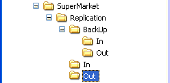
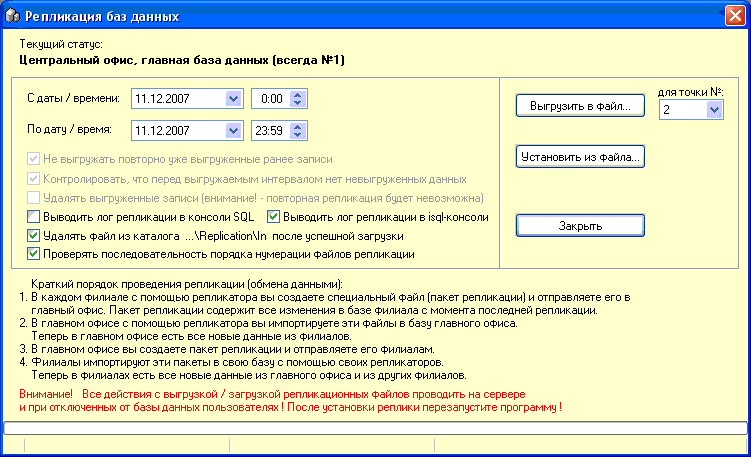

- Для торговых
сетей, которые имеют более одной торговой точки и которые хотят вести весь
учет в одной базе данных существует решение, которое называется
репликация.
- Репликация - это процесс при котором базы данных
различных магазинов приводятся к состоянию идентичности,
т.е. осуществляется обмен данными между торговыми точками.
 Важно !!!
Прочитайте все до того как что-нибудь начинать делать с системой !!!
Важно !!!
Прочитайте все до того как что-нибудь начинать делать с системой !!!
Необходимо понимать, что ведение учета в распределенной базе данных отличается от локального и требует повышенного внимания и корректности работы.
Принимается за исходные данные следующее: есть "центральный офис" с главной базой данных и подчиненные торговые точки, которые работают со своими копиями
(репликами) основной базы данных.
Для прозрачности работы НЕОБХОДИМО все справочники заполнять и в дальнейшем сопровождать в центральном офисе, а не на торговых точках. Впрочем данная система не
запрещает редактировать и создавать новые элементы справочников и на удаленных торговых точках, за исключением операции удаления этих элементов, а также добавления новых строк и удаления старых из уже существующих документов. Эти операции на подчиненных точках запрещены.
Каждую удаленную торговую точку НЕОБХОДИМО выделить в программе в ОТДЕЛЬНЫЙ СКЛАД, только тогда можно избежать путаницы с остатками товара.
Если товар поступает сразу на удаленный склад, то приходная накладная сразу будет адресована на него и другие точки не смогут ошибочно продавать этот товар. Если же
товар поступает на центральный офис и потом распределяется между удаленными торговыми точками, то вначале делаете приходную накладную на склад центрального офиса, а затем создаете внутренние перемещения по распределению товара между удаленными складами.
В целом, можно описать порядок проведения обмена данными (репликации)
так:
1. В каждом филиале с помощью репликатора вы создаете специальный файл - пакет репликации и отправляете его любым способом в центральный офис. После создания он находится в каталоге C:\SuperMarket\Replication\Out и в его имени указан диапазон дат/времени за который реплицируются изменения с базы данных. Этот пакет содержит все изменения в удаленной базе с момента предыдущей репликации.
2. В центральном офисе копируете этот файл в каталог C:\SuperMarket\Replication\In и с помощью репликатора импортируете эти изменения в базу центрального офиса. И так повторяете для каждого из филиалов. Теперь в центральном офисе есть данные из всех филиалов.
3. В центральном офисе вы создаете пакет репликации (свой для каждого из филиалов, что указано в его названии) и отправляете его филиалам.
4. Филиалы импортируют эти пакеты в свою базу данных с помощью своих репликаторов. Теперь в филиалах есть новые данные из центрального офиса и других филиалов.
1. В каждом филиале с помощью репликатора вы создаете специальный файл - пакет репликации и отправляете его любым способом в центральный офис. После создания он находится в каталоге C:\SuperMarket\Replication\Out и в его имени указан диапазон дат/времени за который реплицируются изменения с базы данных. Этот пакет содержит все изменения в удаленной базе с момента предыдущей репликации.
2. В центральном офисе копируете этот файл в каталог C:\SuperMarket\Replication\In и с помощью репликатора импортируете эти изменения в базу центрального офиса. И так повторяете для каждого из филиалов. Теперь в центральном офисе есть данные из всех филиалов.
3. В центральном офисе вы создаете пакет репликации (свой для каждого из филиалов, что указано в его названии) и отправляете его филиалам.
4. Филиалы импортируют эти пакеты в свою базу данных с помощью своих репликаторов. Теперь в филиалах есть новые данные из центрального офиса и других филиалов.
Помните !!!
Все действия по обмену данными и подготовке к репликации производить при
отключенных от базы данных пользователях !!!
Подготовительные действия по внедрению системы репликации:
1. В центральном офисе отключить пользователей от базы, выгрузить SuperMarket, создать резервную копию базы, провести backup/restore
2. Сделать копию базы данных и передать ее на удаленную точку
- 3. Действия по подготовке центральной
базы данных:
3.1. Скопировать библиотеку FreeAdhocUDF.dll в папку UDF, расположенную в папке где
был проинсталлирован Firebird SQL Server на сервере локальной сети
3.2. Скопировать файлы ZipDll.dll, UnzDll.dll в каталог C:\SuperMarket
3.3. В каталоге C:\SuperMarket создать папку Replication, а в ней три вложенных папки:
In, Out, BackUp. Внутри папки BackUp также создать папки In и Out.
- 
3.4. Запустить ПО SuperMarket
3.5. Установить апдейт базы данных PrepareReplication.sql
3.6. Установить апдейт базы данных CreateReplicationProc.sql
3.7. Установить апдейт базы данных ExecReplicationProc.sql
3.8. Зайти в меню "Сервис/Настройки" и на вкладке "Репликация" установить птичку "Разрешить репликацию". Убедиться, что переключатель роли данной торговой точки на той же вкладке установлен на первом пункте - "Центральный офис, главная база данных".
3.9. Сохранить настройки и перезапустить программу.
-
Программа готова к работе в режиме репликации.
- 4. Действия по подготовке удаленной базы
данных:
4.1. Скопировать библиотеку FreeAdhocUDF.dll в папку UDF, расположенную в папке где был проинсталлирован Firebird SQL Server на сервере локальной сети
4.2. Скопировать файлы ZipDll.dll, UnzDll.dll в каталог C:\SuperMarket
4.3. В каталоге C:\SuperMarket создать папку Replication, а в ней три вложенных папки: In, Out, BackUp. Внутри папки BackUp также создать папки In и Out.
4.4. Запустить ПО SuperMarket
4.5. Установить апдейт базы данных PrepareReplication.sql
4.6. Установить апдейт базы данных CreateReplicationProc.sql
---> ОБРАТИТЕ ВНИМАНИЕ !!!
4.7. Установить апдейт базы данных ExecReplicationProc2.sql или ExecReplicationProc3.sql или ExecReplicationProc4.sql и т.д. в зависимости от номера филиала
4.8. Установить апдейт базы данных SetGenerators2.sql или SetGenerators3.sql или SetGenerators4.sql и т.д. в зависимости от номера филиала
4.9. Зайти в меню "Сервис/Настройки" и на вкладке "Репликация" установить птичку "Разрешить репликацию". Установить переключатель роли данной торговой точки на той
же вкладке на второй пункт - "Удаленный филиал, подчиненная база данных...".
Там же укажите номер филиала в выпадающем списке.
--->
4.10. Сохранить настройки и перезапустить программу.
Программа готова к работе в режиме репликации.
ОБРАТИТЕ
ВНИМАНИЕ !!!пункты 3.2., 3.3., 3.8. и 3.9. для центрального офиса и
пункты 4.2., 4.3., 4.9. и 4.10 для удаленных торговых точек
НЕОБХОДИМО СДЕЛАТЬ НА КАЖДОМ КОМПЬЮТЕРЕ СООТВЕТСТВУЮЩЕЙ ЛОКАЛЬНОЙ СЕТИ !
- В дальнейшем для работы с формированием и
вставкой пакетов репликации используется форма из меню "Сервис/Репликация"
главной формы программы.
- 